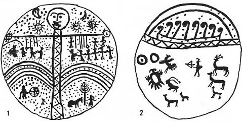

Göktürklerin dişi kurtlu menşe efsanesinde, Demir-dağdan pek söz açılmaz. Fakat tam manası ile Ergenekon efsanesinin daha güzel bir prototipidir.

Şekil 14: Şaman davullarında, "Dünya dağı", "Gökdireği" ve ebekuşağı
(İvanof’dan).
Güney Sibirya ve Altay'daki Türk mitolojisinde Demir-dağlara çok rastlanır. Meselâ çocuklar kutsal bir taya biniyorlar. Tay çocukları aldığı gibi Demir-dağa götürüyor. Tanrı, Ak-Han'ın çocuklarına fenalık gelmesin diye atın ayaklarını kılıç yapıyor. Bu sırada, Katay-Han'ın, "40 boynuzlu boğa''sına rastlıyorlar ve boğayı öldürüp, geri dönüyorlar.91 Bazılarına göre bu demir dağ, Ak-Deniz'in ötesinde bulunuyordu.92 Bazı masallar ise dağdan bahsetmeyip, yalnızca "Çelik-bozkır"dan söz açarlar. Onlara göre, Çelik-Bozkırı da büyük bir denizin ötesinde imiş.93 Bazı masallarda ise, Demir-dağ'daki halkları yenmek için ordu gönderilir.94 Meselâ bunlardan birisi çok enteresan bir masaldır:
"Vaktiyle bir ülkede büyük bir Han varmış. Tanrı bu Han'a, büyük denizi geçerek, Demir-dağ'daki insanlarla harp etmesini emretmiş. Han da, Tanrının bu emrini yerine getirmek için asker göndermiş. Askerler binbir güçlükle denizi geçip, Demir-dağ'a varmışlar ve onlara savaş için geldiklerini söylemişler. Fakat onlar hiç oralı bile olmamışlar ve "savaş nedir," diye de sormuşlar. Bunlar dövüşelim demişler. Anlatmış ve göstermişler ama hiç bir faydası olmamış. Geri dönmek zorunda kalmışlar. Geri dönerlerken de, Demir-dağ'ın Hanı onlara birçok hediyeler ve Hanlarına da bir kürk hediye etmiş. Gelmişler, durumu Hanlarına da anlatmışlar. Hanları da şaşmış bu işe. Getirin demiş, şu kürkü göreyim, demiş. Getirmişler bakmışlar ki bu kürk kendilerine çok büyük. Kürkü parçalayarak 8 tane kürk yapmışlar. O zaman Han, meseleyi anlamış. Demiş ki: "Bunların bir tanesi, bizim sekiz kişimize karşılık imiş." "Biz bunlarla nasıl savaşırız," diye savaştan vazgeçmiş.95"
Görülüyor ki, Demir-Dağ’da oturan anormal vücutlu (Stature deforme) insanlardı. Tıpkı Kaf veya Karnülbakar dağındaki Ye'cuc-Me'cuc'lar gibi. Bu konular üzerinde Han-nâme ile ilgili bölümümüzde geniş bilgi vardır.
U. Harva'nın da gayet doğru dediği gibi, Ergenekon da "Dünya kuşağı"nı teşkil eden bir dağ gibi düşünülmüş olabilirdi.96 Klasik Avrupa mitolojisinde bu kuşağa, (cingulus mundi) denirdi. Ruslara ve Fin-Ugor kavimlerine göre, yeryüzünün kuşağı, Ural dağları idi. Bu konuları incelerken, Kaşgarlı Mahmud'un verdiği şu eski Türk atasözünü göz önünden uzak tutmamamız lâzımdır:
"Yer basrukı tağ, budhun basrukı Beg97 ":
Yani, "yerin baskısı, tutanı dağ; milletin baskısı, tutanı da Bey"dir. Demir ve Bakır-dağlar Türk Mitolojisine güre, bir nevi yeryüzünün temel direkleridir, Ötügen dağı da, böyle bir dağdır.
Anadolu masallarına göre de, Tepe-Göz, Kaf, yani Kafkas dağlarında oturuyordu.98 Dede Korkut kitabında ve Anadolu masallarında, Tepe-Göz de mağara içinde yaşardı. Tıpkı Güney Sibirya masallarında olduğu gibi, insanları mağarasından içeriye çekerdi.99
Ortadoğu kültürlerinin Kaf Dağı, bir nevi eski Türk Demir ve kutsal dağlarının karşılığı idi. Ergenekon destanının esasını teşkil eden de böyle bir dağdı.
Ergenekon Destanının en önemli kaynağı şüphesiz ki, Reşideddin'in meşhur Câmi üt-Tevarih adlı eseridir. Reşideddin, bu efsaneyi, tam manası ile Moğollaştırmıştır. Önce bu efsaneyi kaynaktan olduğu gibi buraya vereceğiz. Sonra da bunun tenkitlerini yapıp, efsanenin orijinal şeklini kurmaya çalışacağız. Reşideddin'in metni burada aynen tercüme edilmiştir. Ancak metni güzel bir ifade ile yazabilmek için, tercüme biraz geniş tutulmuştur:
"Bu kutsal kitabın girişinde de söylendiği gibi Moğol boyları, genel olarak Türk boylarının bir bölümüdür. Bu her iki kavmin de, şekilleri ve dilleri birbirine benzer. Bunların hepsi de, Nuh Peygamber'in oğlu olan Bulca-Han’ın soylarından türemişlerdir. Bulca-Han, bütün Türk kavimlerinin atası idi. Aradan birçok asırlar ve uzun zamanlar geçmiştir. Elbette ki bu uzun zaman içinde, olayların birçokları unutulmuştur. Türklerin başlangıçta, kitapları ve yazıları yoktu. Bunun için de tarih olaylarını yazamamışlardı. Onların belirli ve eski bir tarihleri de yazılmış değildi. Onun için şimdi söylenen tarih olayları da, çok yakın zamanlarda söylenenlere ve nesilden nesile anlatılan bilgilere göre öğrenilmiştir.
"Bu boyların oturdukları yerler ve yurtları, hep birbirine bitişiktir. Bunun için de her boyun oturduğu yurdun, nereden nereye kadar uzadığı, herkes tarafından bilinir. Onların bütün yurtları, Uygur'ların sınırlarından, Hıtay ve Cürçet ülkelerine kadar uzanır. Bu yurtların yerine şimdi Moğolistan adı verilir.100 Bu yerlerin adları ile onlarla ilgili bilgiler, daha önceki bölümlerde verilmişti.
"Daha önce Moğol adı verilen bu boyların, aşağı yukarı 2.000 sene önce, Türk boyları ile araları açılmış ve birbirlerine düşman olmuşlardı. Bu düşmanlık, o kadar büyümüş ve inada dökülmüştü ki, birbirlerini ortadan kaldırmak için durmadan savaş ediyorlardı. Sözlerine inanılır, doğru sözlü ve bilgili kişilerin anlattıklarına göre Türk boyları, Moğollara karşı galip gelmişler ve onları öldürmüşlerdi.101
"Bu mağlup edilen boylardan, iki kadınla, iki erkekten başka bir kimse kalmamıştı. Bu iki ev halkı da (Türkler) gelir de bizi öldürür diye, sarp ve kayalık bir yere kaçıp, saklanmışlardı. Bu saklandıkları yerin etrafı, hep dağlar ve ormanlar ile örtülü imiş. Dimdik dağlarla çevrili olan bu yerin, girilip çıkılacak bir geçidinden başka bir yeri de yokmuş. Bu geçitten bile bin bir güçlük ve zorlukla girilip çıkılırmış. Dağların orta yeri ise, dümdüz ve çayırlık bir ova imiş. Bu ovanın adına da Ergenekon derlermiş. Kon sözünün manası, "dağ beli, geçit" demektir. Ergene ise, "sarp" anlamına gelen bir sözdür.
"Düşmanın kılıcından kurtularak sağ kalan bu iki kişinin adı, Negüz ve Kıyan idi. Onlar senelerce o güzel ova içinde yaşadılar ve yavaş yavaş soyları da çoğalmağa başladı. Birbirleri ile evlenmek yolu ile gittikçe çoğaldılar. Bölüm bölüm ayrıldılar. Böylece meydana gelen onların oymakları, ayrı ayrı adlar almaya başladılar ve birbirlerini o adla çağırmaya başladılar. Bu oymaklara obak denirdi. Her obak, belirli bir kan birliğinden ve soydan olurdu.102 Obaklar çoğalınca, onlar da bölümlere ayrıldılar. Ne kadar çoğalır ve ayrılırlarsa ayrılsınlar, bu oymakların hepsi birbirine akraba ve yakın idiler. Onun için birbirine yakın ve akraba olan oymaklara Mogol-Dürlügin derlerdi103.
"Mogol adı, "Mong-ol" sözünden gelir. Anlamı ise "süzülmüş ve saf" demektir. Moğolcada Kıyan sözü, "dağların tepesinden aşağıya doğru süratle akan sel" ile "sert, çevik, kuvvetli" anlamına gelir.104 Kıyat Bahadır adı, yiğit ve fevkalâde cesur ve kahraman olan kimselere verilen bir addır. Bu adı, ancak böyle olan kimseler alabilir. Kıyat sözü ise, Kıyan’ın çoğuludur.
"Bu dağların arasında sıkışarak çoğalmağa başlayan halklar, artık bu dağ ve ormanlıklar içinde yaşayamaz bale gelmişlerdi. Çünkü buralar, onlara çok dar geliyordu. Yaşamak da, artık çok güçleşmişti. Dağlar arasındaki tek geçitten geçmek de yine çok zor idi. Hepsi bir araya gelip, bu dar geçitten nasıl geçeceklerini düşündüler ve kurtuluş için bir yol aradılar. Hemen bu geçitte bir demir madeni vardı. Bu madeni işletir ve onları eriterek, daima demir çıkarırlardı. Başka bir yol bulamayınca, bu demir kapıyı eritip, oradan çıkmaya karar verdiler. Hepsi bir araya gelip, ormandan odunlar topladılar ve eşeklerle, yük yük kömürler getirdiler. Ayrıca da körükler yaptılar. Bu körükleri yapmak için de, yetmiş105 baş at ve öküz kestiler. Bunların derilerini soyup sepilediler. Topladıkları dağ gibi odun ve kömürleri geçidin önüne yığdılar. Körükleri öyle dizdiler ki, ateş yanıp da körükler üflenmeye başlayınca, dağ hemen eriyip, delinecekti. En sonunda, ateşler yandı, körükler işledi ve geçit de eriyip parçalandı. Bu sırada, pek çok da demir elde edilmişti. Tabii olarak yol da açılınca, içeride hapsolan halkın hepsi, dışarıya kolaylıkla çıkabildiler. Bu suretle bozkırlara yayılıp, her biri bir yerde yerleştiler.
"Söylediklerine göre bu körükleri, en soylu ve baş boy olan Kıyan boyuna bağlı olan kişiler üflemişlerdi. Körüklerin başında onlar vardı. Bununla beraber, Negüs ve Uriyangkat106 boylarının da, körüklerin işletilmesi işinde onlara yardım ettikleri söylenir. Başka boylar da, Ergenekon'da körük çektiklerini iddia ederler ama; onların bu iddialarına kimse değer vermez. Bilhassa adı geçen bu boylar, onların bu sözlerini yalanlarlar.
"Ergenekon'da yaşarlarken, Negüs ve Kıyan boylarından ayrılma yolu ile bazı başka boylar da meydana gelmişti. Mesela bunlardan birisi Kongkrat boyu idi. İleride bu boy hakkında çok geniş bilgi verilecektir. Yine söylediklerine göre bu boy, herkesten önce ileri fırlamış ve kimseye sormadan, danışmadan, öbür boyların ocaklarını, ateşlerini de çiğneyerek dışarı çıkmış imiş. Böyle hiç kimseye sormadan, pervasızca herkesin ocağını çiğneyerek çıkan bu boyun Tanrı da cezasını vermiş ve onların ayakları ile bacakları, bir hastalıktan dolayı ağrır olmuş.
Herkes, Kongkrat'ların ayak ağrılarının bundan ileri geldiğini söyler ve buna böyle inanırlar.107
"Şimdi, Ergenekon adlı bu yerde, bir Moğol kabilesi oturmaktadır. Burasını görenler, o yerin o kadar sarp bir yer olmadığını söylerler, öyle anlaşılıyor ki, "geçidi parçalayıp, açtık" demelerinden maksat "kendimize yeni bir yol ve çığır açtık" demek sureti ile kendi kendilerine göre bir fikir savunuyorlardı.
"Alan-Kowa (Alan-Ko’a)’nın kocası Dobun-Bayan, Kıyat kabilesinden idi.108 Alan-Kowa da, Korulas kabilesindendir. Çingiz-Han da bu ikisinin soyundan geliyordu. Bu sebeple Çingiz-Han'ın soyu da, demirleri eritme yolu ile dağı delme olayını ve dolayısı ile demirciliği109 hiç unutmazlardı. Yeni yılın başladığı gece, demircilerin kullandıkları körükleri bulurlar, ocak ve kömür hazırlarlar, bir parça demiri ateşte iyice ısıtarak örse korlar ve demire çekiçle vura vura uzatırlardı. Bu yolla, hem Ergenekon'dan çıkmış oldukları günü hatırlamış olurlar ve hem de kendilerini oradan kurtardığı için Tanrı'ya bu şekilde şükretmiş olurlardı.
"Yukarıda da söylediğimiz gibi, çok eski zamanlarda Kıyat adlı soylu bir kabile vardı. Fakat bu da sonradan çoğalmış ve bu boydan birçok kabileler türeyerek, hepsi de ayrı ayrı adlar almıştı. Dobun-Bayan'dan sonra, bu kabileler böyle çoğalınca, Kıyat sözü de, yalnızca bir lakap ve ad olarak kalmıştı.110
"Alan-Kowa'nın altıncı göbeğinden gelen Kabul-Han adlı biri vardı. Bunun da altı oğlu doğmuştu. Kabul-Han da, oğulları da, çok yiğit, cesur, büyük ve itibarlı Han oğulları idiler. Böyle oldukları için de, Tacik'lerin usullerine uyularak onlara Kıyat ünvanı verildi.111 Bu sebepten dolayı, o tarihten beridir ki, herkes artık onlara Kıyat demeğe başladı, Çinggiz-Han'ın atalarından olan Bartan-Bahadır’ın Kıyat ünvanı da meşhurdur. Bartan-Bahadır'ın büyük oğlunun adı da Mönggödü-Kıyan'dır.112 Mönggödü adı, genel olarak, vücudunda çok ben olan ve bilhassa büyük benli olan kimselere ad olarak verilirdi.113 Çok cesur ve yiğit bir kimse idi. Halen Kıpçak ülkesinde bulunan ve Kıyat lâkabını taşıyan büyük memur ve komutanlar, onun amcazadeleri ile yakınlarından gelirler. Çingiz-Han ve ataları, Kıyat boyundan geliyorlardı.
"Fakat Çinggiz-Han'ın babası Yesügâi (Yesügey) - Bahadır ve oğullarına Kıyat-Borçıgın114 lâkabı verilmiştir. Onlar, hem Kıyat ve hem de Borçıgın idiler. Borçıgın sözü Türkçe bir sözdür. Manası da, "gözleri elâ ve rengi kızıl olan" bir kimse demektir.115 Böyle kimseler, çok cesur ve savaşçı insanlar olurlardı. Onların yiğitliği ve cesareti, diğer boylar arasında, adeta bir atasözü haline gelmiştir. Diğer boylar birbirleri ile savaşırken, düşman karşısında sıkışınca, hemen onlara sığınırlardı. Bu sığınan boylar onlara bol para ve hediyeler vererek, yardımlarını elde ederlerdi. Yine onların bu kudret ve kuvvetlerinden faydalanarak da, kuvvetli düşmanlarını alt ederlerdi. Bunları yazdık ama bu yazdıklarımızın hepsi, bu kabilelerin hayatlarının pek az bir kısmını özetleyebilir.
"İleride de söyleyeceğimiz gibi, birçok kabileler meydana gelmiştir. Bunların başlıcaları Moğol-Nirun'larla, Mogol-Dürlügin’lerdir. Mogol-Dürlügin'ler Çingiz-Han'ın atalarıdırlar ve Ergenekon'dan çıkmışlardır. Diğer Moğollar ise Nirun bölümündendir..."